Este
pefil es el encargado de identificar y aplicar soluciones reutilizables
a problemas recurrentes de diseño en proyectos de software. Este
componenete es diferente al de UML, en el sentido en que desarrolla
soluciones por patrones sobre un diseño de UML, sino que etiqueta donde
dichas soluciones pueden ser identificadas y aplicadas.
El componente permite etiquetar los siguientes patrones:
- 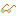Fachada:
Este patrón estructural indica una interfáz unificada que ofrece acceso
a las funcionalidades de un subsistema, haciendo estas mas fáciles de
usar y ofreciendo una abstracción de mas alto nivel. Esta etiqueta
puede ser colocada sobre los diferentes diagramas en los que la
interfaz está presente ( clases y componentes por ejemplo)
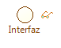
Figura 1. Representación de una Facha sobre una Interfaz
Los siguientes perfiles pueden ser aplicados únicamente en el diagrama de patrones.
- 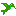Visitor:
Este patrón de comportamiento representa las operaciones que pueden ser
aplicada en los elementos de la estructura de un objeto. El patrón
visitor permite definir nuevas operaciones sin cambiar las clases a las
cuales dichos elementos pertenecen.
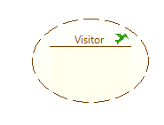
Figura 2. Respresentación del patrón Visitor
- 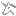Singleton: Este patrón creacional representa una clase que será instanciada una única vez en tiempo de ejecución.
- Puente: Este patrón estructural desacopla una abstracción de su implementación
- Proxy: Este patrón estructural provee un sustituto para que otro objeto pueda acceder a los métodos de control de éste.
- 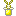Prototipo:
Este patrón creacional especifica los tipos de objetos a crear usando
una instancia prototipo, los nuevos objetos son creados copiando el
prototipo.
- Peso Ligero:
Este patrón estructural permite compartir eficientemente
características comunes entre una gran cantidad de objetos, siempre y
cuando estos posean características en común.
- 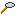Observador:
Este patrón de comportamiento define una dependencia de 1 a n objetos,
donde dado un objeto que cambia de estado, todas sus n dependencias son
notificadas y actualizadas automáticamente.
- Momento:
Este patrón de comportamiento permite encapsular, capturar y
externalizar el estado de un objeto, sin perder la encapsulación del
mismo.
- Método Plantilla:
Este patrón de comportamiento define un esqueleto para un algortimo en
una operación, transfiriendo algunos pasos a subclases. El método
plantilla permite redefinir algunos pasos del algoritmo sin cambiar su
estructura.
- 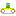Método Fábrica: Este patrón creacional define una interfáz para crear un objeto, pero
permite a una subclase elegir que clase será instanciada. Este patrón
permite delegar la instanciación a subclases.
- Mediador:
Este patrón de comportamiente define un objeto que encapsula como un
conjunto de objetos interactúa. Este patrón permite acoplamiento debil
entre clases al evitar que los objetos se referencien de manera
explícita y además permite variar la interacción entre estos.
- Iterador:
Este patrón provee una forma de acceder los elementos de un objeto
agregado de manera secuencial sin exponer su representación interna.
- 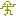Interprete:
Dado un lenguaje, define una representación para su gramática junto con
el interprete que usa la representación para interpretar las sentencias en
un lenguaje.
- 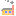Fabrica:
Este patrón creacional provee una interfaz para la creación de familias
de objetos u objetos relacionados sin necesidad de especificar las
clases en concreto a partir de las cuales se instancia.
- Estrategia:
Este patrón de comportamiento define una familia de algoritmos
encapsulados cada uno en una clase, cuya ejecución puede ser
determinada en tiempo de ejecución.
- 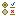Estado: Este patrón de comportamiento permite a un objeto alterar su comportamiento cuando uno de sus estados internos cambia.
- 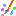Decorador:
Este patrón estructural permite agregar nuevas responsabilidades a un
objeto de manera dinámica, sin cambiar su interfaz. Este patrón ofrece
una alternativa a las subclases con el fin de extender la funcionalidad.
- 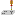Constructor:
Este patrón creacional permite separar la construcción de objetos
complejos de su representación, para que de esta manera el mismo
proceso pueda crear diferentes representaciones.
- 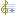Componente: Este patrón estructural compone los objetos en forma de arbol para representar jerarquias parte-todo.
- 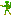Comando:
Este patrón de comportamiento encapsula los peticiones como objetos,
para de esta manera parametrizar clientes con diferentes peticiones,
colas o registros, soportando operaciones que no pueden ser revertidas.
- Cadena:
Este patrón de comportamiento permite evitar el acoplamiento entre
el emisor y el receptor de una petición. A través del patrón se
recibe la petición y esta es pasada a través de la cadena hasta que
esta se atiende.
- Adaptador:
Este patrón estructural convierte la interfaz de una clase en
otra que es esperada por un cliente. Este patrón permite adaptar
clases que no funcionarían entre sí, debido a la diferencia entre las
interfaces ofrecidas y esperadas.
|